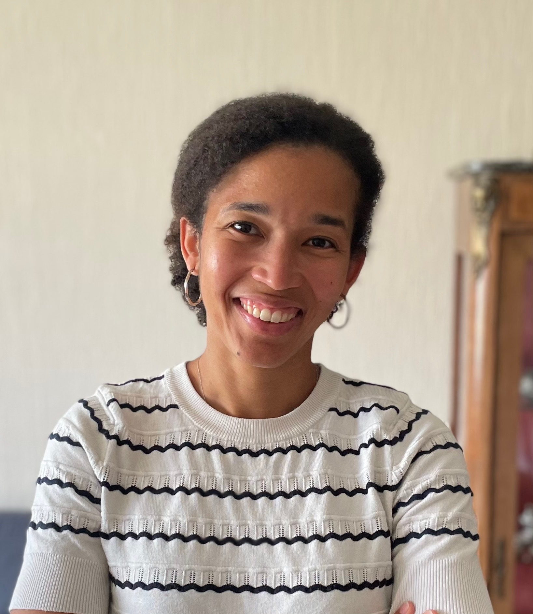

Estelle Mossou

Estelle Mossou é uma física belga especializada em biologia estrutural, com uma carreira marcada por contribuições significativas em instituições europeias de pesquisa. Atualmente, ela atua como Engenheira de Ligação Industrial no European Synchrotron Radiation Facility (ESRF) em Grenoble, França.
Formação e Carreira
- Obteve uma bolsa de estudos para estudar física na Universidade de Bath, no Reino Unido.
- Realizou estágio no Institut Laue-Langevin (ILL) em Grenoble, aprofundando sua experiência em pesquisa.
- Concluiu seu doutorado em colaboração entre a Keele University e o ILL, focando em técnicas avançadas de difração.
- Atuou como cientista no ILL por cinco anos, contribuindo para pesquisas em química supramolecular e sinalização celular.
- Ingressou no ESRF em 2023, facilitando a interação entre a pesquisa acadêmica e o setor industrial, especialmente farmacêutico.
Principais Contribuições
- Pesquisa em biologia estrutural e difração, promovendo avanços na cristalografia macromolecular.
- Mais de 48 publicações científicas, acumulando mais de 1.200 citações.
- Estudos sobre a estrutura e dinâmica de proteínas, além de investigações sobre a mercerização da celulose.
- Participação ativa na comunidade científica, atuando como jurada no European Union Contest for Young Scientists (EUCYS) 2023.
Saiba mais
Voltar